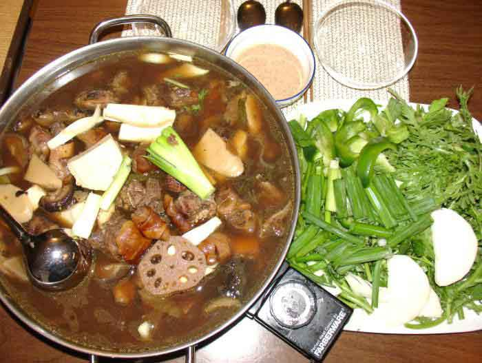

Cùng bắt tay làm thử thôi nào!
Nguyên liệu:
- 1.5 kg thịt dê tươi
- 1 củ tỏi + 2 củ hành tím băm nhỏ.
- 1/2 muỗng cà phê ngũ vị hương.
- 1/2 muỗng súp ớt khô.
- 1M muối.
- 1.5 M đường.
- 1 m bột ngọt.
- 1 m tiêu xay.
- 300 gr nấm đông cô.
- 1 cup rượu vang đỏ.
- 1 củ khoai môn cao.
- 1 củ sen
- Hủ ky cây hoặc hủ ky miếng chiên vàng (bỏ vào nylon cột kín lại để không bị mềm)
- 1/2 hủ chao.
- 1 chén nhỏ đậu phọng rang vàng xay nhuyễn.
- Mì, rau cải ăn lẩu.
Thực hiện:
- Giã gừng hòa với rượu trắng ướp thịt dê khoảng 20ph để khử mùi hôi.
- Khoai môn gọt vỏ, xắt cục.
- Nấm đông cô ngâm nước cho nở.
+ Ướp thịt: Thịt dê thái miếng con cờ chừng 2 đốt tay, để ráo nước (hoặc lấy giấy thấm khô thịt). Đem ướp với tỏi + hành + muối + đường + bột ngọt + ngũ vị hương + ớt + rượu vang chừng 4-5 tiếng cho thấm hoặc để qua đêm càng ngon.
+ Cách nấu: Khử hành tỏi cho thơm, cho thịt dê vào xào cho săn lại, cho nước vào (muốn ngon thì cho nước dừa xiêm vào) hầm thịt. Nước sôi hạ nhỏ lửa, vớt bọt. Cho khoai môn, củ sen vào, hầm thịt gần mềm cho tiếp nấm đông cô vào. Nêm nếm vừa ăn. Thịt mềm nhắc xuống.
Cho ra lẩu. (Thời gian hầm thịt khoảng 1 tiếng là thịt mềm)
+ Chế biến nước chấm: Chao hòa với nước + đậu phọng xay nhuyễn + 1M đường + ớt sa tế, nêm vừa ăn.
Có thể cho thêm chanh hoặc giấm vào tùy thích.Với món lẩu dê này, nếu thích có thể thêm đậu hủ trắng, củ sen vào nước lèo lúc hầm thịt. Ăn chung với mì, rau, và tàu hủ ky chiên giòn.
Chúc các bạn ngon miệng với món lẩu dê!